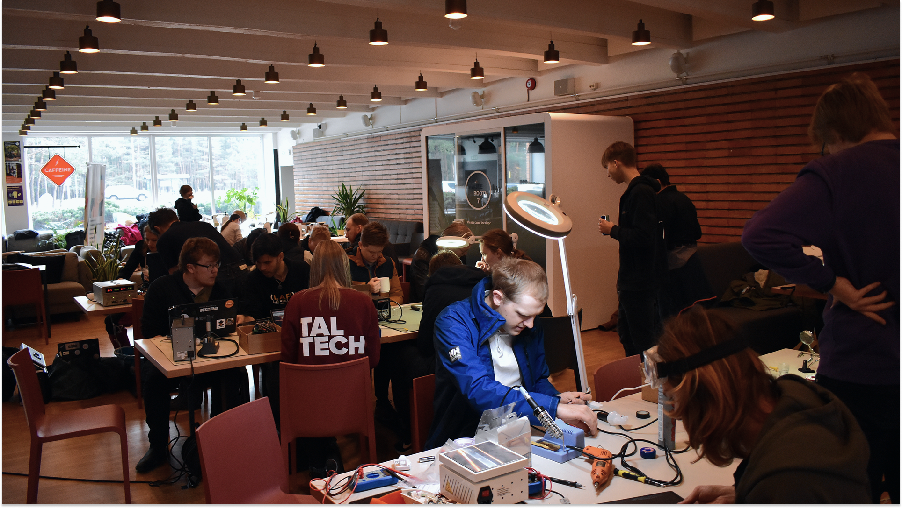
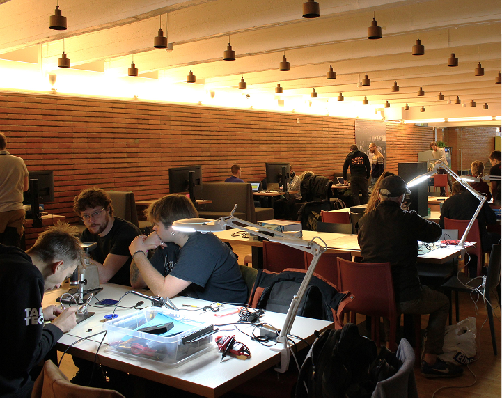
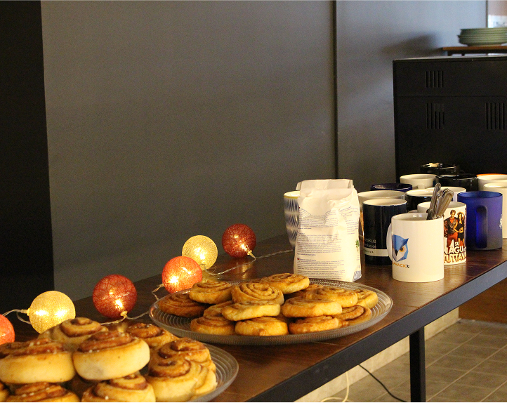
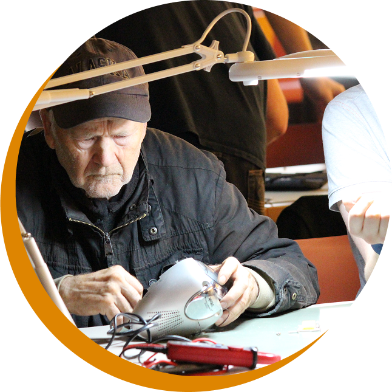

Tegid Katki?
Parandame koos!
Elektroonikat ei pea ära viskama! Teeme erinevust koos!
8. Nov 2025

Kus?
Taltech Peamaja KohvikAkadeemia tee 5, Tallinn
Millal?
8. November, 202511:00 - 15:00
Muu info
- Tasuta tee, kohvik ja pirukad
- Too kaasa enda arvutid, riided, moblad, millel parandust vaja on - parandame koos kõik ära (ja tasuta!)
- Pane 'Going' Facebook'is ka!

Ajalugu
Kuidas sai Remondikohvik alguse?
Remondikohvik ei toimu üldsegi mitte esimest korda! See sai alguse juba 2013. aastal Skeemipesa, Lapikute ja kohviku Pööning koostöös. Vahelduva eduga on üritust korraldatud aastate jooksul mitu korda. Tegelikult ei ole ka remondikohviku idee üldsegi uus, vaid sarnastele üritustele on mitmel pool maailmas päris palju populaarsust kogunenud. Sellest on kujunenud lausa kogukond, mis toob regulaarselt naabruskonna ühtekohtu, et aidata üksteisel korda teha asjad, mille parandamine üksi võib lootusetuna tunduda ning samal ajal ka lõbusalt aega veeta. Loodame, et meie unistus täitub ning näeme sellise kogukonna teket ka Tallinnas.